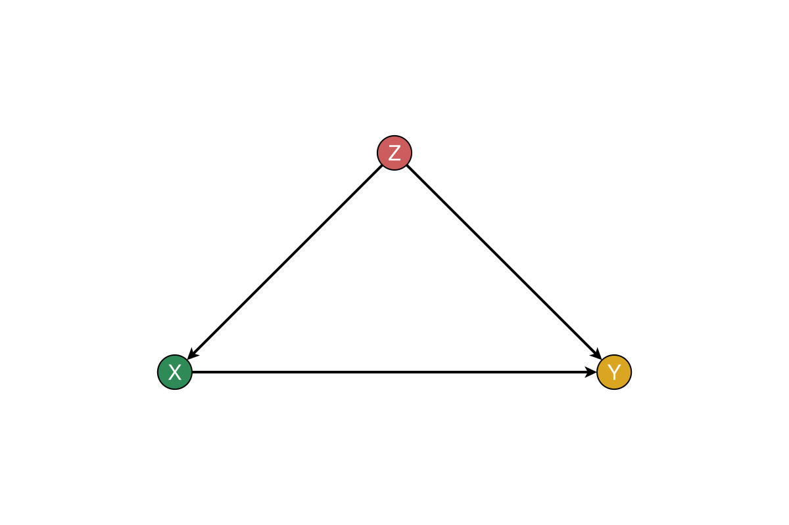
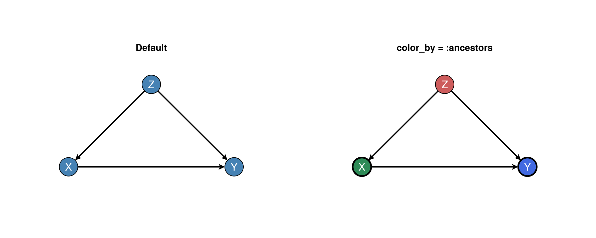
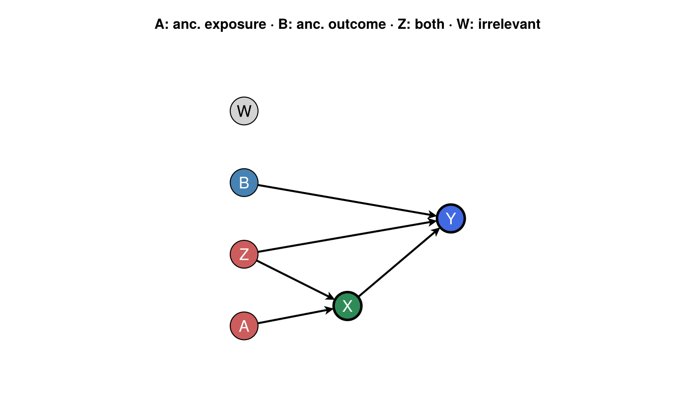
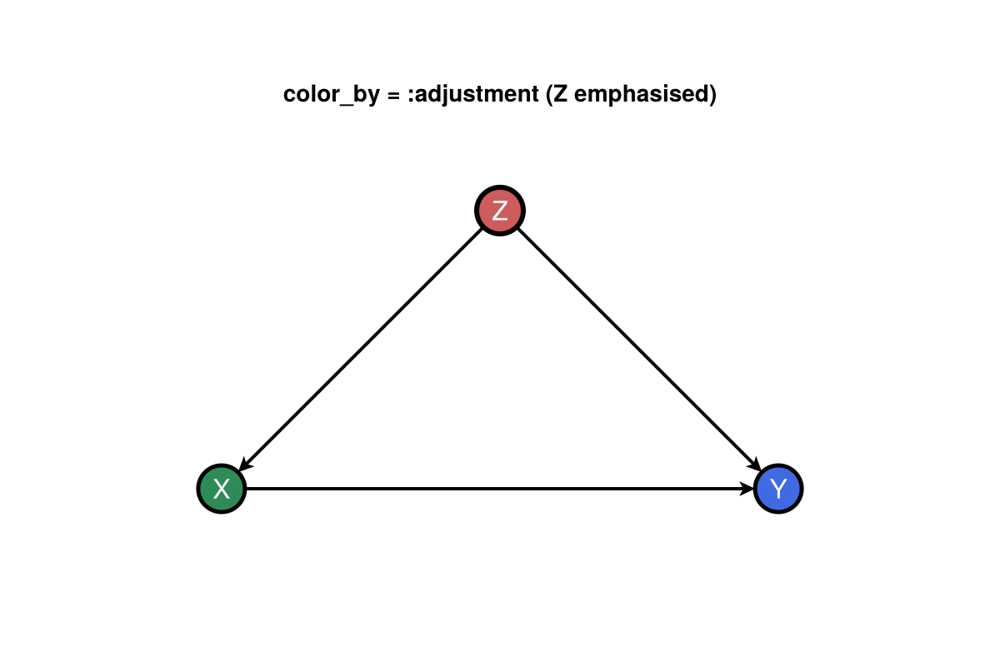
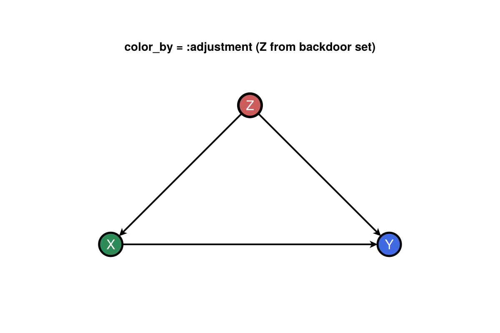
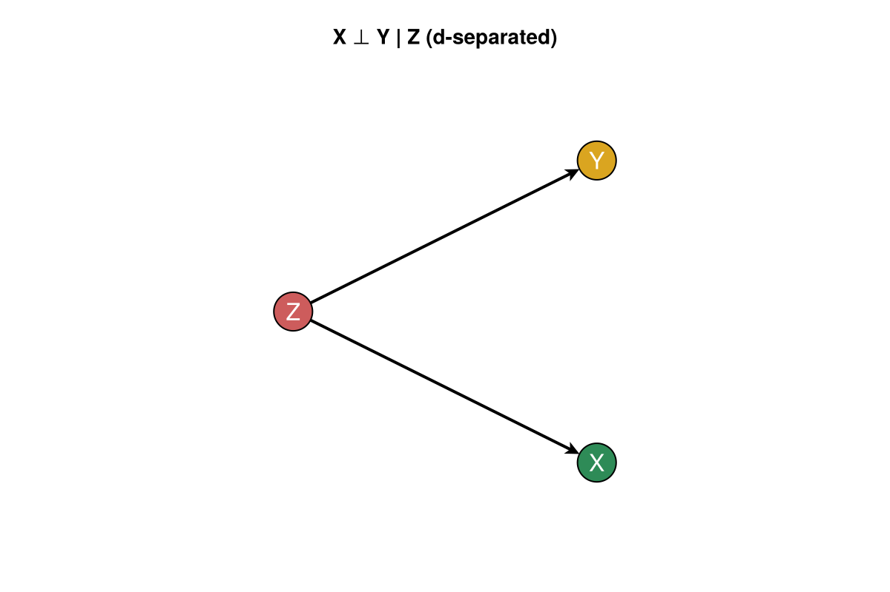
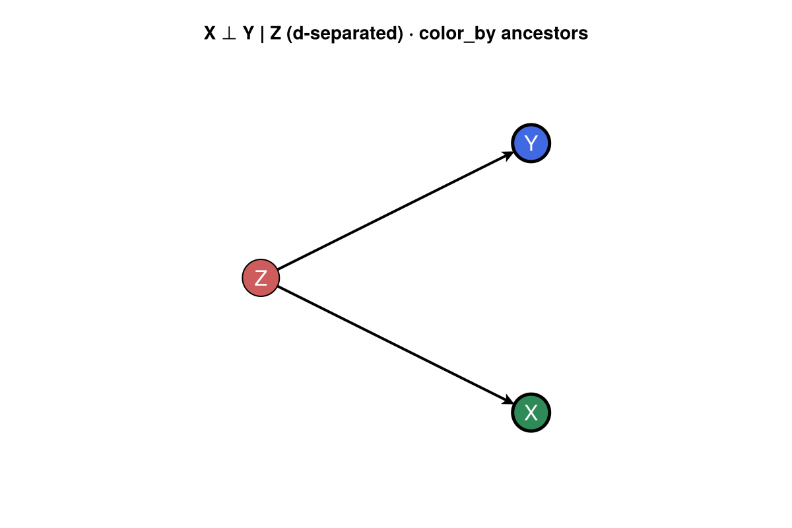

Causal highlighting
DAGMakie highlights paths and adjustment sets that you already computed. Identification algorithms live in CausalInference.jl (or CausalDynamics.jl façades). Pass the resulting sets into the plot helpers — the core package does not pull CausalInference; load it when you want registry identification helpers alongside GraphMakie ≥0.6 (supported since CausalInference 0.19.4).
using Graphs, DAGMakie, CairoMakie
g, labels = confounding_graph(["Z", "X", "Y"])
# From CausalInference.find_min_backdoor_adjustment(g, 2, 3) — or hard-code Z
adjustment = Set([1])
fig, ax, p = dagplot_backdoor(g, 2, 3; adjustment = adjustment, labels = labels)
fig
dagplot_adjustment accepts an explicit set the same way:
using Graphs, DAGMakie, CairoMakie
g, labels = confounding_graph(["Z", "X", "Y"])
fig, ax, p = dagplot_adjustment(g, 2, 3; adjustment = Set([1]), labels = labels)
fig
Smart / dagitty-style colours
Pass color_by=:ancestors with exposure and outcome to colour nodes like dagitty “highlight ancestors”. Variables outside the ancestral closure of exposure ∪ outcome are grayed out; shared ancestors (often on backdoors) are marked in red.
| Colour | Role |
|---|---|
| Seagreen | Exposure |
| Royal blue | Outcome |
| Medium seagreen | Ancestor of exposure only |
| Steel blue | Ancestor of outcome only |
| Indian red | Ancestor of both |
| Light gray | Outside the ancestral closure |
Ancestor sets use CausalInference.jl when it is loaded; otherwise Graphs reverse-BFS. color_by=:adjustment also thickens a backdoor adjustment set (needs CausalInference, or pass adjustment=).
Default vs color_by (confounding triangle)
Same graph, plain steel-blue nodes versus dagitty-style roles. Here $Z$ is an ancestor of both exposure $X$ and outcome $Y$ (indian red).
using Graphs, DAGMakie, CairoMakie
g, labels = confounding_graph(["Z", "X", "Y"])
fig = with_theme(dag_theme()) do
fig = Figure(size = (900, 360))
ax1 = Axis(fig[1, 1], title = "Default")
ax2 = Axis(fig[1, 2], title = "color_by = :ancestors")
dagplot!(ax1, g; labels = labels)
dagplot!(ax2, g; color_by = :ancestors, exposure = 2, outcome = 3, labels = labels)
fig
end
fig
Full role palette
A slightly richer DAG shows every ancestor role at once: $A$ affects only the exposure, $B$ only the outcome, $Z$ both, and $W$ is irrelevant.
using Graphs, DAGMakie, CairoMakie
# A → X ← Z → Y ← B, X → Y; W isolated
g = SimpleDiGraph(6)
add_edge!(g, 1, 4) # A → X
add_edge!(g, 2, 4) # Z → X
add_edge!(g, 2, 5) # Z → Y
add_edge!(g, 3, 5) # B → Y
add_edge!(g, 4, 5) # X → Y
labels = ["A", "Z", "B", "X", "Y", "W"]
roles = classify_smart_roles(g, 4, 5)
@show roles
fig = with_theme(dag_theme()) do
# Place X below the Z→Y chord so A→X and Z→X do not cross it.
layout = Point2f[
(0.0, -2.7), # A
(0.0, -0.9), # Z
(0.0, 0.9), # B
(2.6, -2.2), # X (below Z→Y so parent edges do not cross it)
(5.2, 0.0), # Y
(0.0, 2.7), # W
]
fig, ax, p = dagplot_smart(g, 4, 5;
labels = labels,
layout = layout,
figure_size = (700, 420),
)
ax.title = "A: anc. exposure · B: anc. outcome · Z: both · W: irrelevant"
fig
end
fig
Emphasise an adjustment set
color_by=:adjustment keeps the ancestor colours and draws a thicker dark-red outline on adjustment nodes. Pass adjustment= explicitly when CausalInference is not loaded (as in this documentation build).
using Graphs, DAGMakie, CairoMakie
g, labels = confounding_graph(["Z", "X", "Y"])
fig = with_theme(dag_theme()) do
fig, ax, p = dagplot(g;
color_by = :adjustment,
exposure = 2,
outcome = 3,
adjustment = Set([1]), # Z
labels = labels,
)
ax.title = "color_by = :adjustment (Z emphasised)"
fig
end
fig
With CausalInference available in your environment you can omit adjustment and let the extension compute a minimal backdoor set:
using CausalInference # activates DAGMakieCausalInferenceExt
fig, ax, p = dagplot(g; color_by = :adjustment, exposure = 2, outcome = 3, labels = labels)That call draws the same emphasis as below (for this DAG the extension returns ${Z}$). The documentation environment does not load CausalInference (registry builds pin GraphMakie incompatible with 0.6), so the figure uses the equivalent explicit set:
using Graphs, DAGMakie, CairoMakie
g, labels = confounding_graph(["Z", "X", "Y"])
fig = with_theme(dag_theme()) do
fig, ax, p = dagplot(g;
color_by = :adjustment,
exposure = 2,
outcome = 3,
adjustment = Set([1]), # same as find_min_backdoor_adjustment(g, 2, 3)
labels = labels,
)
ax.title = "color_by = :adjustment (Z from backdoor set)"
fig
end
fig
d-Separation titles
Pass separated from dsep / d_separated for axis titles. Use a fork $X ← Z → Y$ (no direct $X → Y$): conditioning on $Z$ d-separates $X$ and $Y$. A confounding triangle with $X → Y$ keeps them d-connected.
using Graphs, DAGMakie, CairoMakie
g, labels = fork_graph(["X", "Z", "Y"]) # X ← Z → Y
# X ⊥ Y | Z (Z blocks the only path)
fig, ax, p = dagplot_dsep(g, 1, 3, Set([2]); separated = true, labels = labels)
fig
Combine color_by colours with a d-separation title when teaching forks:
using Graphs, DAGMakie, CairoMakie
g, labels = fork_graph(["X", "Z", "Y"])
fig = with_theme(dag_theme()) do
fig, ax, p = dagplot(g;
color_by = :ancestors,
exposure = 1,
outcome = 3,
labels = labels,
)
ax.title = "X ⊥ Y | Z (d-separated) · color_by ancestors"
fig
end
fig